Beppu
Beppu · Oita
Beppu
Highlighted on the Oita map.
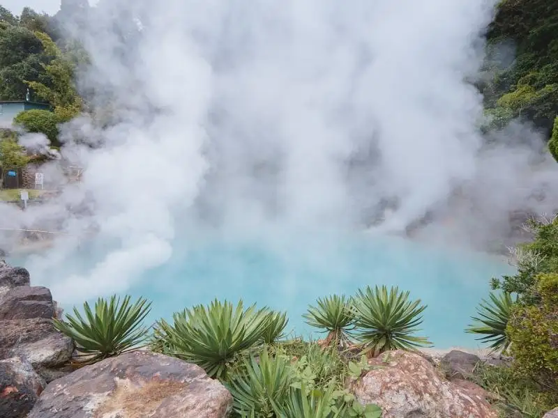
Sights
Myoban Eria Yu no Hana Koya
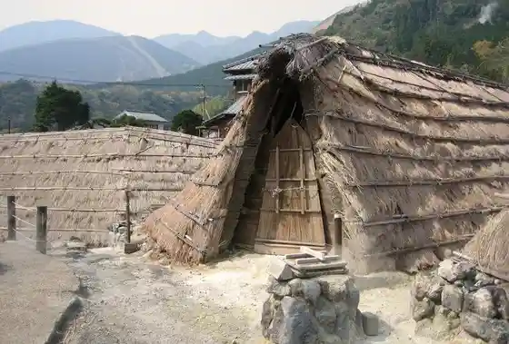
Mori no Yu Resort
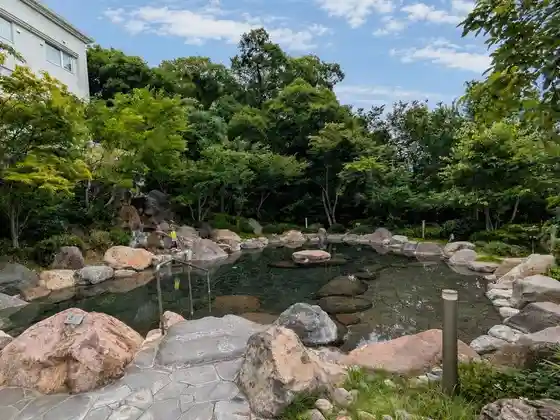
Ekimae Koto Onsen
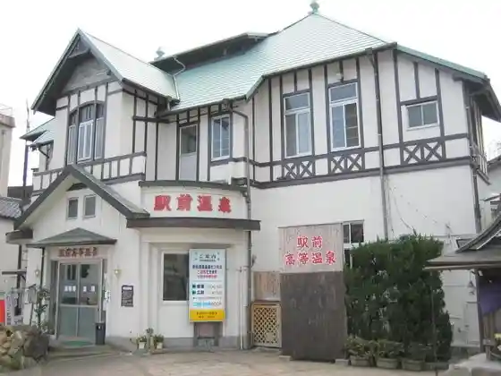
Yu Kemuri Lookout
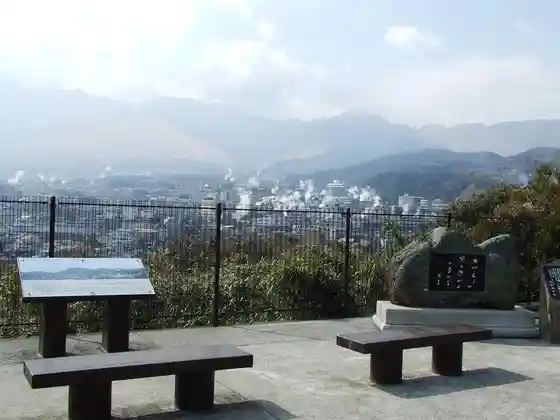
Beppu Onsen Suginoi Hotel (Akuabiito)
Koshitsu Onsen Ofuyu
Beppu Take Saiku Dento Sangyo Hall
Beppu Kokusai Kanko Minato Chushajo
AMANE RESORT SEIKAI
Aburaya Kumahachi no Zo (Aburayakumahachi no Zo)
Beppu Jigoku Meguri
Umi Jigoku
Oniishi Bozu Jigoku
Kamado Jigoku
Oniyama Jigoku
Shiraike Jigoku
Chi no Ike Jigoku
Ryu Kan Jigoku
Myoban Onsen Okamoto Ya
Oita Kaori no Museum
Mori Han Bettei (SARABiO Onsen Biseibutsu Kenkyusho)
Beppu Ropuei
Tsurumi Gaku
Shiei Shibai Baths (Beppu Komyuniteii Center)
Shiei Kame Yo Izumi
Shiei Yu Miyako Pia Hama Waki
Shiei Hama Waki Onsen
Shiei Hamada Onsen
Shiei Furo Izumi
Shiei Ta no Yu Onsen
Shiei Nagaishi Onsen (Nageshionsen)
Shiei Hotta Onsen
Shiei Shiba Ishi Onsen
Shiei Kaimon Tera Onsen
Kagura Onna Mizumi
Shiei Take Kawara Onsen
Shidaka Mizumi
Beppu Ato Museum
Beppu Tetsurin Jigoku Onsen Museum
Otto e Sette Oita
Kotorikafe
Beppu Ogi Yama Gorufu Kurabu
Joshima Kogen Gorufu Club
Joshima Kogen Park
Rakutenchi
Hachiman Kamado Mon Shrine
Shiiki Arugeritchihausu
Hyotan Onsen
Beppu Hachi Yu (Beppuhatto)
Shiei Tetsurin Mushi Yu
Shiei Netsu Baths
Suginoi Hotel
Chinetsu Kanko Rabo Heri Kan
Beppu Kokusai Kombenshon Center Biikon Plaza
Jigoku Mushi Workshop Tetsurin
Myoban Yu Village
Shiei Jizo Izumi (Kyugyochu)
Beppu Onsen Hoyo Land
Yuya Ebisu
Za Akua Garden
Yu Sai no Yado Nozomi
Jumonji Hara Highlands
Okamoto Ya Baiten
Tetsurin Jigoku Chitai Park
Minami Tateishi Park
Beppu Sogo Gym (Beppu Ariina)
Beppu Park
Yamanami Haiuei
Beppu Chuo Kominkan (Kyu Beppu Public Hall)
Nai Sei (Uchinari) Tanada
Midori no Taiyo
Hachiman Choken Shrine
Beppu Kotsu Center
Hiotoko Hi Bai Shrine (Ho no Oho no Mejinja)
Yoshihiro Shrine (Yoshihirojinja)
Mochigahama Seaside Park
Beppu Yakusho
Dining
Grill Takka
Grill Takka
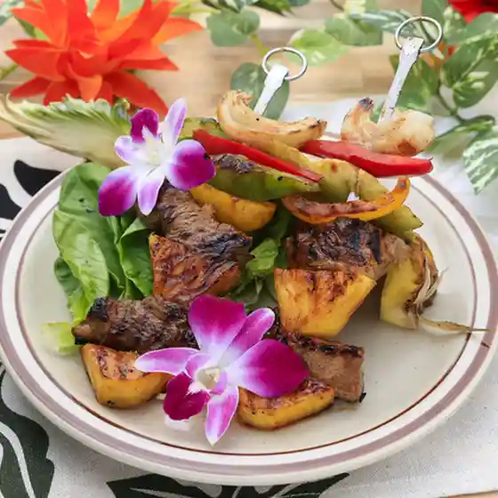
別府ブルワリー
Beppu Buruwarii
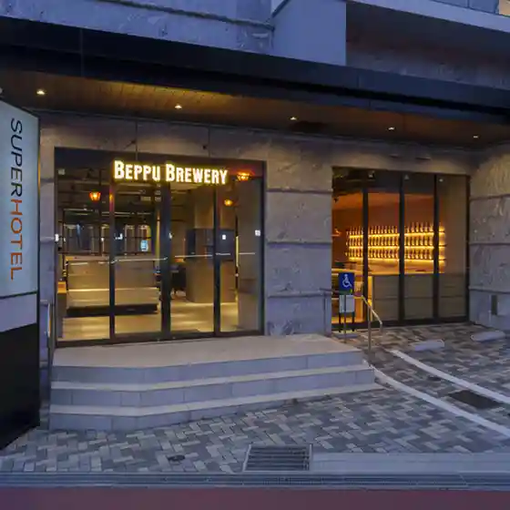
別府タワースペースデッキ BBQ&Sauna
Beppu Tawaasupeesudekki Bbq&Amp;Sauna
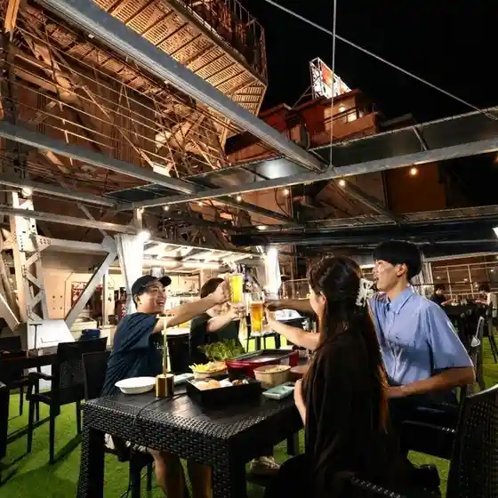
や台ずし 別府駅前町
Ya Dai Zushi Beppu Ekimae Machi

焼き肉 凡
Yakiniku Bon
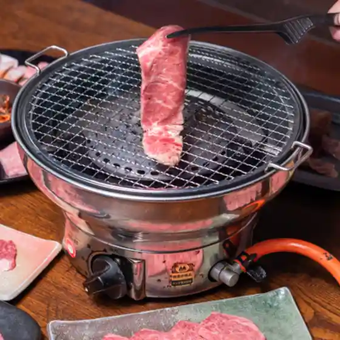
円円
Yuenyuen
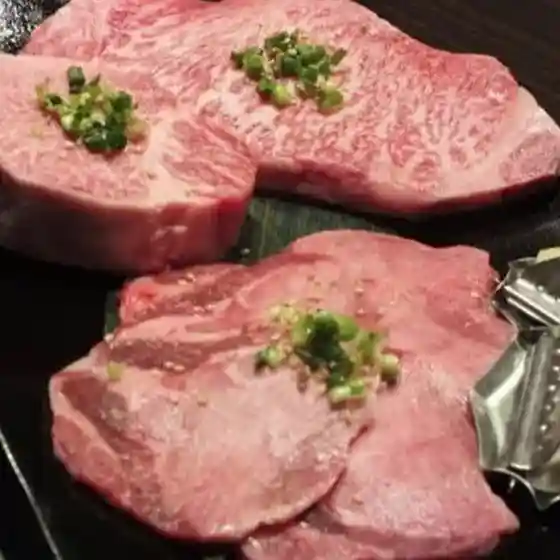
さかなや道場 別府東口店
Sakanaya Doujou Beppu Higashiguchiten
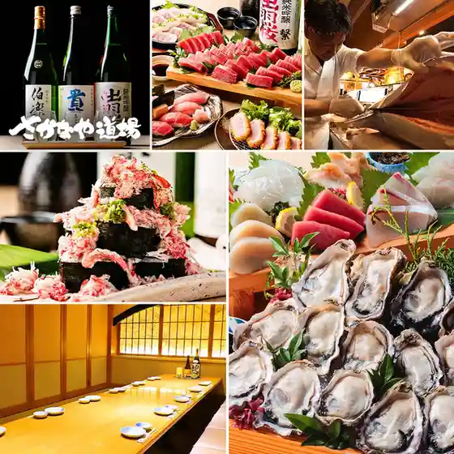
チョロ松
Choro Matsu
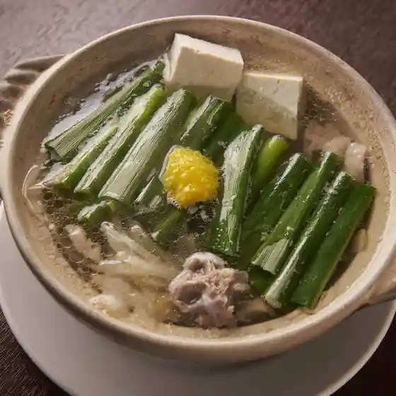
焼肉元相 本店
Yakiniku Moto Sou Honten
焼肉いちはし
Yakiniku Ichihashi
串カツ田中 大分別府店
Kushi Katsu Tanaka Ooita Beppu Mise
うた乃 総本店
Uta No Souhonten
豊後牛ステーキの店 そむり 別府本店
Bungo Ushi Suteeki No Mise Somuri Beppu Honten
焼とり 凡 母家
Yaki Tori Bon Omoya
Beppu Bold Kitchen
Beppu Bold Kitchen
別府焼肉 きんぼし
Beppu Yakiniku Kinboshi
季節の色 shuhari
Kisetsu No Iro Shuhari
ダイニングキッチン Puerta del Sol
Dainingukitchin Puerta Del Sol
居酒屋とり串
Izakaya Tori Kushi
オロチと柊 べっぷ駅市場店
Orochi To Hiiragi Beppu Eki Shijou Mise
地鶏屋 羽音
Jidori Ya Uon
別府温泉 ホテル三泉閣
Beppu Onsen Hoteru San Izumi Kaku
テラス御堂原
Terasu Midou Hara
TABOS
Tabos
風乃樹
Kaze No Ki
ジンギスカン滝川 別府店
Jingisukan Takikawa Beppu Mise
タコナーゴ
Takonaago
三五ホルモン 鉄輪通店
San Go Horumon Tetsurin Toori Mise
鳥 なかお
Tori Nakao
目利きの銀次 別府東口駅前店
Mekiki Kino Ginji Beppu Higashiguchi Ekimae Mise
居酒屋ちっち
Izakaya Chitchi
アトリエ
Atorie
酒菜 りょう吉
Shusai Ryou Kichi
ザ・バー
Za・Baa
たつのや
Tatsunoya
大韓民食ボッコチュクチェ
Daikan Tami Shoku Bokkochukuche
四季亭 はな村
Shiki Tei Hana Mura
大分kitchen HAL
Ooita Kitchen Hal
エレメンツ
Erementsu
イタリア酒場grappa
Itaria Sakaba Grappa
豊後前 霧翠
Bungo Mae Kiri Sui
御料理 はた野
Goryou Ri Hata No
別府炭焼亭ちはら
Beppu Sumiyaki Tei Chihara
日本料理 別府 廣門
Nihonryouri Beppu Hirokado
百膳の夢本家
Hyaku Zen No Yume Honke
大分うなぎ まるしん
Ooita Unagi Marushin
グリルみつば
Guriru Mitsuba
大阿蘇
Daia So
並木街珈琲 大分別府店
Namiki Machi Koohii Ooita Beppu Mise
串乃屋
Kushi No Ya
みなみ丸 合歓
Minami Maru Goukan
ダイニングカフェありす
Dainingukafe Arisu
油屋熊八亭
Aburaya Kumahachi Tei
ザ・ラウンジ
Za・Raunji
和食処若潮
Washoku Tokoro Wakashio
Beer&Pickles Satsuma
Beer&Amp;Pickles Satsuma
ザ ピーク
Za Piiku
旬菜和味(おにやまホテル)
Jun Na Wa Aji ( Oniyama Hoteru )
不老軒 上人店
Furou Ken Shounin Mise
ホテルシーウェーブ
Hoterushiiueebu
Toyotsune Honten Beppu Oita Prefecture Kyushu
Toyotsune Honten Beppu Oita Prefecture Kyushu
Toyotsune Honten Beppu Oita Prefecture Kyushu
Toyotsune Honten Beppu Oita Prefecture Kyushu
Toyotsune Honten Beppu Oita Prefecture Kyushu
Toyotsune Honten Beppu Oita Prefecture Kyushu
Toyotsune Honten Beppu Oita Prefecture Kyushu
Toyotsune Honten Beppu Oita Prefecture Kyushu
Kamesho Kurukuru Sushi Beppu Oita Prefecture Kyushu
Kamesho Kurukuru Sushi Beppu Oita Prefecture Kyushu
Kamesho Kurukuru Sushi Beppu Oita Prefecture Kyushu
Kamesho Kurukuru Sushi Beppu Oita Prefecture Kyushu
Kamesho Kurukuru Sushi Beppu Oita Prefecture Kyushu
Kamesho Kurukuru Sushi Beppu Oita Prefecture Kyushu
Kamesho Kurukuru Sushi Beppu Oita Prefecture Kyushu
Kamesho Kurukuru Sushi Beppu Oita Prefecture Kyushu
Hajime Zushi Beppu Oita Prefecture Kyushu
Hajime Zushi Beppu Oita Prefecture Kyushu
Hajime Zushi Beppu Oita Prefecture Kyushu
Hajime Zushi Beppu Oita Prefecture Kyushu
Hajime Zushi Beppu Oita Prefecture Kyushu
Hajime Zushi Beppu Oita Prefecture Kyushu
Hajime Zushi Beppu Oita Prefecture Kyushu
Hajime Zushi Beppu Oita Prefecture Kyushu
Okamotoya Baiten Beppu Oita Prefecture Kyushu
Okamotoya Baiten Beppu Oita Prefecture Kyushu
Okamotoya Baiten Beppu Oita Prefecture Kyushu
Okamotoya Baiten Beppu Oita Prefecture Kyushu
Okamotoya Baiten Beppu Oita Prefecture Kyushu
Okamotoya Baiten Beppu Oita Prefecture Kyushu
Okamotoya Baiten Beppu Oita Prefecture Kyushu
Okamotoya Baiten Beppu Oita Prefecture Kyushu
Teppanyaki sacoo Beppu Oita Prefecture Kyushu
Teppanyaki sacoo Beppu Oita Prefecture Kyushu
Teppanyaki sacoo Beppu Oita Prefecture Kyushu
Teppanyaki sacoo Beppu Oita Prefecture Kyushu
Teppanyaki sacoo Beppu Oita Prefecture Kyushu
Teppanyaki sacoo Beppu Oita Prefecture Kyushu
Teppanyaki sacoo Beppu Oita Prefecture Kyushu
Teppanyaki sacoo Beppu Oita Prefecture Kyushu
Amamichaya Beppu Oita Prefecture Kyushu
Amamichaya Beppu Oita Prefecture Kyushu
Amamichaya Beppu Oita Prefecture Kyushu
Amamichaya Beppu Oita Prefecture Kyushu
Amamichaya Beppu Oita Prefecture Kyushu
Amamichaya Beppu Oita Prefecture Kyushu
Amamichaya Beppu Oita Prefecture Kyushu
Amamichaya Beppu Oita Prefecture Kyushu
Beer Pub Robata Jin Beppu Oita Prefecture Kyushu
Beer Pub Robata Jin Beppu Oita Prefecture Kyushu
Beer Pub Robata Jin Beppu Oita Prefecture Kyushu
Beer Pub Robata Jin Beppu Oita Prefecture Kyushu
Beer Pub Robata Jin Beppu Oita Prefecture Kyushu
Beer Pub Robata Jin Beppu Oita Prefecture Kyushu
Beer Pub Robata Jin Beppu Oita Prefecture Kyushu
Beer Pub Robata Jin Beppu Oita Prefecture Kyushu
Eitaro Beppu Oita Prefecture Kyushu
Eitaro Beppu Oita Prefecture Kyushu
Eitaro Beppu Oita Prefecture Kyushu
Eitaro Beppu Oita Prefecture Kyushu
Teppanyaki sacoo Beppu Oita Prefecture Kyushu
Teppanyaki sacoo Beppu Oita Prefecture Kyushu
Teppanyaki sacoo Beppu Oita Prefecture Kyushu
Teppanyaki sacoo Beppu Oita Prefecture Kyushu
Minamimaru Nemu Beppu Oita Prefecture Kyushu
Minamimaru Nemu Beppu Oita Prefecture Kyushu
Minamimaru Nemu Beppu Oita Prefecture Kyushu
Minamimaru Nemu Beppu Oita Prefecture Kyushu
Shinzushi Beppu Oita Prefecture Kyushu
Shinzushi Beppu Oita Prefecture Kyushu
Shinzushi Beppu Oita Prefecture Kyushu
Shinzushi Beppu Oita Prefecture Kyushu
Hasshin Zushi Beppu Oita Prefecture Kyushu
Hasshin Zushi Beppu Oita Prefecture Kyushu
Hasshin Zushi Beppu Oita Prefecture Kyushu
Hasshin Zushi Beppu Oita Prefecture Kyushu
Japanese Restaurant Hanamizuki Beppu Oita Prefecture Kyushu
Japanese Restaurant Hanamizuki Beppu Oita Prefecture Kyushu
Japanese Restaurant Hanamizuki Beppu Oita Prefecture Kyushu
Japanese Restaurant Hanamizuki Beppu Oita Prefecture Kyushu
Stay
べっぷの宿 ホテル白菊
Beppuno Yado Hoteru Shiragiku
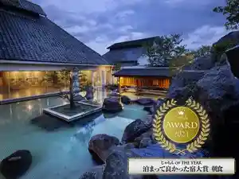
別府温泉 竹と椿のお宿 花べっぷ
Beppu Onsen Take To Tsubaki Noo Yado Hana Beppu
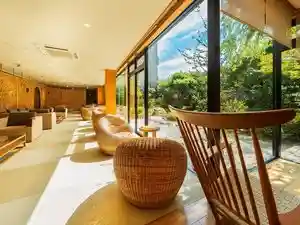
ホテル 別府パストラル
Hoteru Beppu Pasutoraru
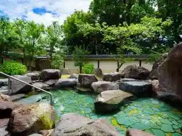
貸別荘さくら草
Kashibessou Sakura Kusa
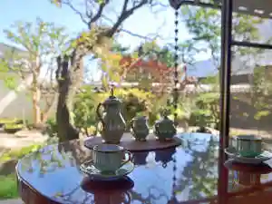
源泉かけ流しの庭園露天風呂と癒しの宿 別府 豊泉荘
Gensen Kake Nagashi No Teien Rotenburo To Iyashi No Yado Beppu Housen Sou
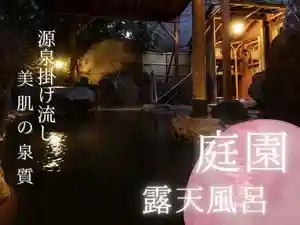
別府 夕凪
Beppu Yuunagi
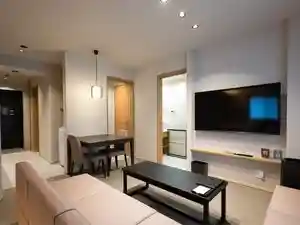
グランドベースイオラニ
Gurandobeesuiorani
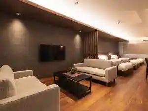
Ｊ－ＳＴＡＹ 別府 インディゴ
J - S T A Y Beppu Indigo
旅館 千成
Ryokan Sennari
Beppu ゆめり
Beppu Yumeri
グランドベース別府駅前
Gurandobeesu Beppu Ekimae
自家源泉かけ流しの宿 新ほり井
Jika Gensen Kake Nagashi No Yado Shin Hori I
ホテルフジヨシ
Hoterufujiyoshi
アパホテル〈別府駅前〉
Apahoteru < Beppu Ekimae >
別府ステーションホテル西館 ホテルスター
Beppu Suteeshonhoteru Nishikan Hoterusutaa
BEPPU Risana
Beppu Risana
別府第一ホテル
Beppu Daiichihoteru
ＰｒｉｍｅＲｏｏｍ別府 ＴＡＴＡＭＩｓｕｉｔｅ
P R I M E R O O M Beppu T A T A M I S U I T E
Tabist アネックス松美
Tabist Anekkusu Matsumi
BEPPU 和 -nagomi-
Beppu Wa -Nagomi-
グランドベース別府駅
Gurandobeesu Beppu Eki
グランドベース別府
Gurandobeesu Beppu
HOTEL AZ 大分別府駅前店
Hotel Az Ooita Beppu Ekimae Mise
ホテル はやし
Hoteru Hayashi
葉籠 ～大人2名様限定・全室半露天付き素泊まり旅館～
Ha Kago ~ Otona 2 Meisama Gentei ・ Zenshitsu Han Roten Tsuki Moto Tomari Ryokan ~
別府駅前 ホテルシーウェーブ別府
Beppu Ekimae Hoterushiiueebu Beppu
眺望の宿 しおり
Choubou No Yado Shiori
別府八湯 御宿 野乃別府（ドーミーインチェーン）
Beppu Hachi Yu Onjuku No No Beppu ( Doomiiincheen )
匠晴の宿 心庵
Takumi Sei No Yado Kokoro Iori
別府ステーションホテル
Beppu Suteeshonhoteru